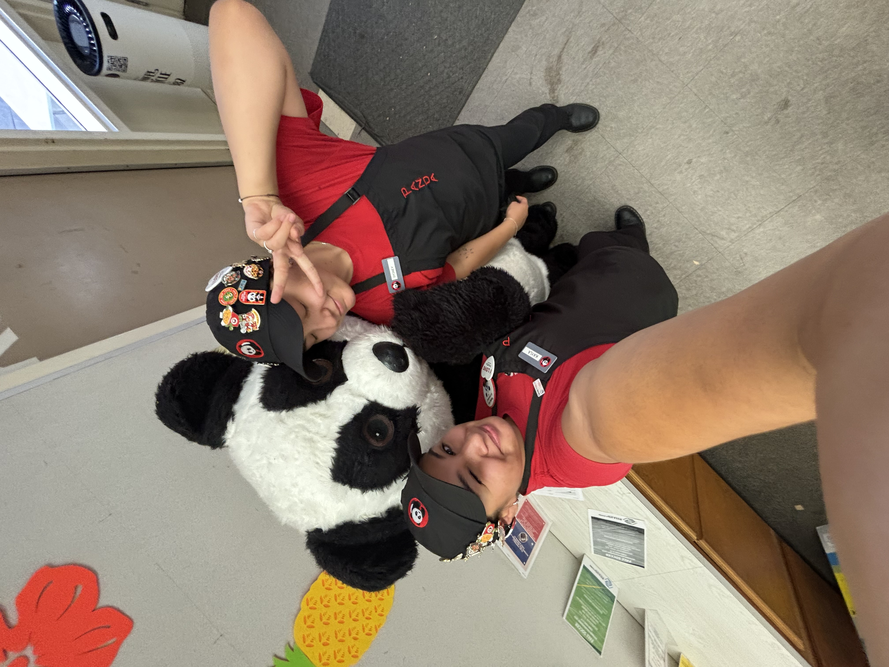
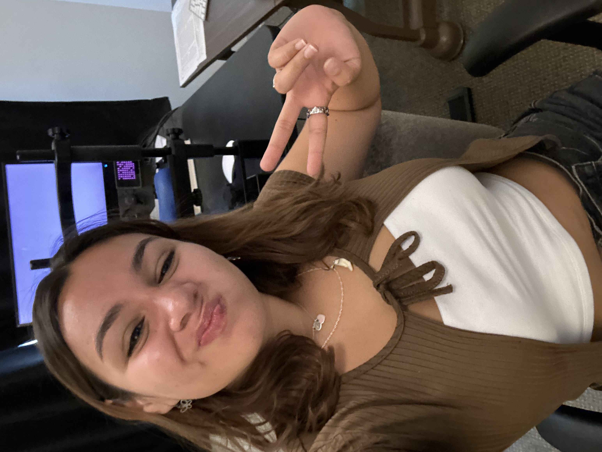
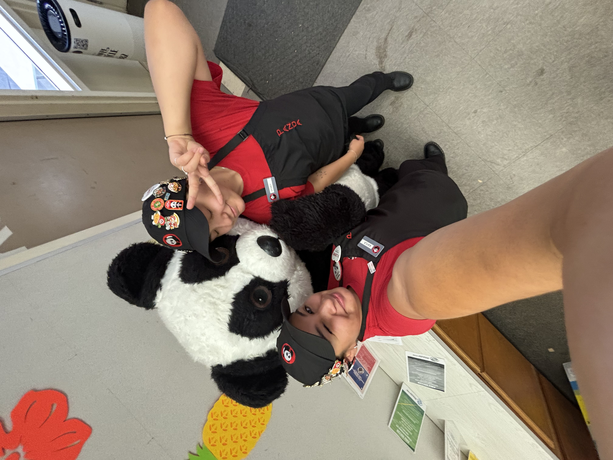
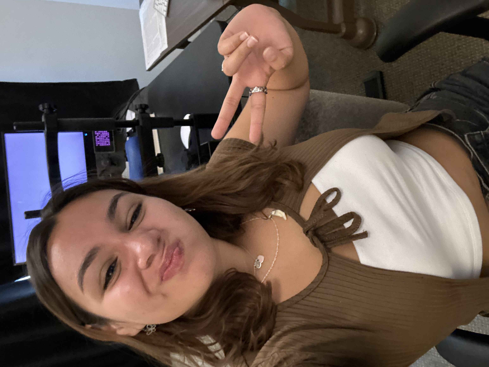

Kayla See
Hi! I am Kayla See and I’m a current fourth year undergraduate psychology major at UCR. I’m currently in a cognitive and neural sciences lab where I work one on one with participants and collect data. With this experience I plan on continuing into the research path and pursuing further education in cognitive psychology. These skills have helped me learn how to work one-on-one with participants and how to adapt to different types of obstacles that may occur while working with someone. With this lab I have also learned how to use useful tools such as the eye tracking machine, handgrip tools, and EEG equipment. Being able to understand the goals behind these interesting studies helps me broaden my knowledge when it comes to creating my own research project in the future.
Additionally, I have strong customer service experience which has helped me expand my patience while serving customers. With my position as a shift lead, I was able to delegate tasks and run a store while a manager was not present. This skill has allowed me to strengthen my confidence when it comes to working with others and strengthened my work skills. This task has exposed me to different types of people and the variety of skills a person may or may not have, this helps in the creation of various ways of training and delegating tasks. This experience has prepared me further for a future career in working with other individuals that present different working or social skills.
With my additional experience in peer mentoring, I was able to work one-on-one with two first year undergraduate students and help prepare them for the obstacles that one may see during their first year of college. Preparing them with resources and weekly help not only helped my mentees, but helped me when it came to feeling prepared for the further years of college. This experience in mentorship helped with getting a grasp of what working with individuals in a similar environment would be like and seeing if I could be successful in this field. Having the opportunity to broaden my career options for my future is very fortunate and the skills I have learned from these jobs have helped me figure out what I see my future career being.
These skills have helped prepare me for furthering my career and education. With the interest in helping others and becoming a resource for some I could develop research skills that provide help for those with neurological issues or advantages. With useful communication, one-on-one experience, and delegating skills I can use this in my future job or career to help benefit those around me. I believe I would be a great employee that works well with constructive criticism and strives to further my experience in a specific field I am working in. I’m excited to keep learning, collaborate with others in the field, and apply my research experience to new challenges that deepen our understanding of human behavior and the mind-body connection.
Experience
Research Assistant
• Conduct tests on participants using MATLAB
• Led memory retrieval tests
• Synthesize data for research reports
Shift Lead
• Delegated tasks to 10+ employees
• Performed opening and closing procedures
Peer Mentor
• Mentored 2 students in their transition to university academic and social life
• Advised students with course schedules, career choices, and requirements towards academic
success
Education
UC Riverside
Portfolio




 